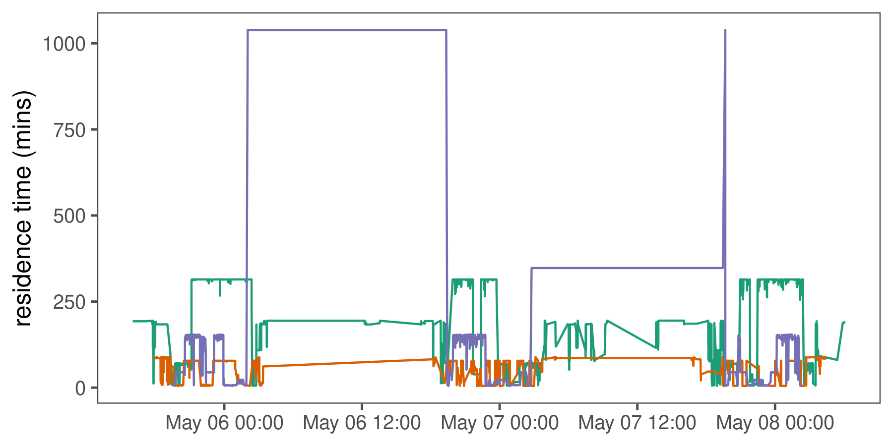
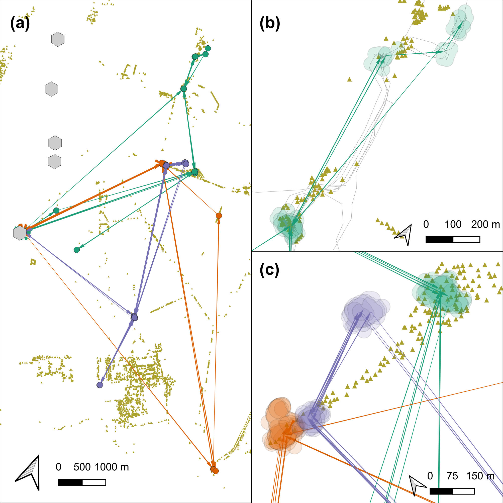

Section 7 Processing Egyptian fruit bat tracks
We show the pre-processing pipeline at work on the tracks of three Egyptian fruit bats (Rousettus aegyptiacus), and construct residence patches.
7.1 Prepare libraries
7.2 Read bat data
Read the bat data and convert to a csv file.
# prepare the connection
con <- dbConnect(drv = SQLite(), dbname = "data/Three_example_bats.sql")
# list the tables
table_name <- dbListTables(con)
# prepare to query all tables
query <- sprintf('select * from \"%s\"', table_name)
# query the database
data <- dbGetQuery(conn = con, statement = query)
# disconnect from database
dbDisconnect(con)Convert data to csv.
7.3 Sanity check: Plot bat data
Save the raw data plot.
Show the plot.

7.4 Prepare data for filtering
7.4.1 Prepare data per individual
7.5 Filter by covariates
No natural bounds suggest themselves, and we proceed to filter by covariates, since point outliers are obviously visible.
We use filter out positions with SD > 20 and positions calculated using only 3 base stations.
We use the function atl_filter_covariates.
# get SD.
# since the data are data.tables, no assignment is necessary
invisible(
lapply(data_split, function(dt) {
dt[, SD := sqrt(VARX + VARY + (2 * COVXY))]
})
)
# filter for SD <= 20
# here, reassignment is necessary as rows are being removed
# the atl_filter_covariates function could have been used here
data_split <- lapply(data_split, function(dt) {
dt <- atl_filter_covariates(
data = dt,
filters = c("SD <= 20",
"NBS > 3")
)
})
# check whether the filter has worked
invisible(
lapply(data_split, function(dt) {
assertthat::assert_that(min(dt$SD) <= 20,
msg = "some SDs above 20 remain")
assertthat::assert_that(min(dt$NBS) > 3,
msg = "some NBS below 3 remain")
})
)
7.6 Filter by speed
Some point outliers remain, and should be removed using a speed filter.
First we calculate speeds.
# calculate speed on split data once more
data_split <- split(data_split, data_split$TAG)
# get speeds as with SD, no reassignment required for columns
invisible(
lapply(data_split, function(dt) {
# first process time to seconds
# assign to a new column
dt[, time := floor(TIME / 1000)]
dt[, `:=`(speed_in = atl_get_speed(dt,
x = "X", y = "Y",
time = "time",
type = "in"),
speed_out = atl_get_speed(dt,
x = "X", y = "Y",
time = "time",
type = "out"))]
})
)Now filter for speeds > 20 m/s (around 70 km/h).

7.7 Median smoothing
Apply a 5 point median smooth to the data.
# since the function modifies in place, we shall make a copy
data_smooth <- copy(data_split)
# split the data again
data_smooth <- split(data_smooth, data_smooth$TAG)Remember, atl_median_smooth MODIFIES IN PLACE.

7.8 Making residence patches
7.8.1 Calculating residence time
First, the data is put through the recurse package to get residence time.
Get residence time. Since bats may revisit the same features, we want to prevent confusion between frequent revisits and prolonged residence.
For this, we stop summing residence times within Z metres of a location if the animal exited the area for one hour or more.
# get residence times
data_residence <- lapply(data_smooth, function(dt) {
# do basic recurse
dt_recurse <- getRecursions(
x = dt[, c("X", "Y", "time", "TAG")],
radius = 50,
timeunits = "mins"
)
# get revisit stats
dt_recurse <- setDT(
dt_recurse[["revisitStats"]]
)
# count long absences from the area
dt_recurse[, timeSinceLastVisit :=
ifelse(is.na(timeSinceLastVisit), -Inf, timeSinceLastVisit)]
dt_recurse[, longAbsenceCounter := cumsum(timeSinceLastVisit > 60),
by = .(coordIdx)
]
# get data before the first long absence of 60 mins
dt_recurse <- dt_recurse[longAbsenceCounter < 1, ]
dt_recurse <- dt_recurse[, list(
resTime = sum(timeInside),
fpt = first(timeInside),
revisits = max(visitIdx)
),
by = .(coordIdx, x, y)
]
# prepare and merge existing data with recursion data
dt[, coordIdx := seq(nrow(dt))]
dt <- merge(dt,
dt_recurse[, c("coordIdx", "resTime")],
by = c("coordIdx"))
setorderv(dt, "time")
})7.8.2 Sanity check: Residence-time time-series
# bind the list
data_residence <- rbindlist(data_residence)
# get time as human readable
data_residence[, ts := as.POSIXct(time, origin = "1970-01-01")]Save the speed filtered data plot.
Show the plot.

7.8.3 Constructing residence patches
Split the data and construct residence patches.
Some preparation is required. First, the function requires columns x, y,
time, and id.
# add an id column
data_residence[, `:=`(id = TAG,
x = X, y = Y)]
# filter for residence time > 5 minutes
data_residence <- data_residence[resTime > 5, ]
# split the data
data_residence <- split(data_residence, data_residence$TAG)Now segment-cluster into residence patches.
7.8.4 Getting residence patch data
We get the residence patch data as spatial sf-MULTIPOLYGON objects.
# get data spatials
data_spatials <- lapply(data_patches, atl_patch_summary,
which_data = "spatial",
buffer_radius = 25)
# bind list
data_spatials <- rbindlist(data_spatials)
# convert to sf
library(sf)
data_spatials <- st_sf(data_spatials, sf_column_name = "polygons")
# assign a crs
st_crs(data_spatials) <- st_crs(2039)7.8.5 Write patch spatial representations
Write cleaned bat data.
Write patch summary.
7.9 Processed bat patches
This figure made in QGIS.
